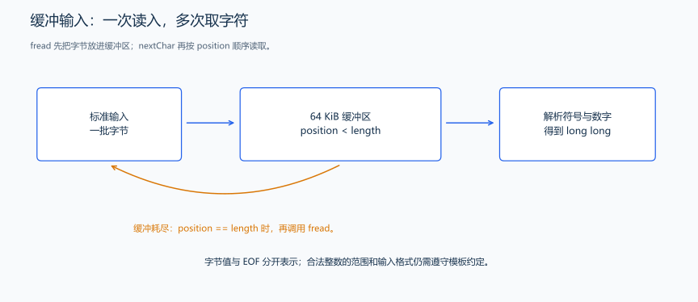
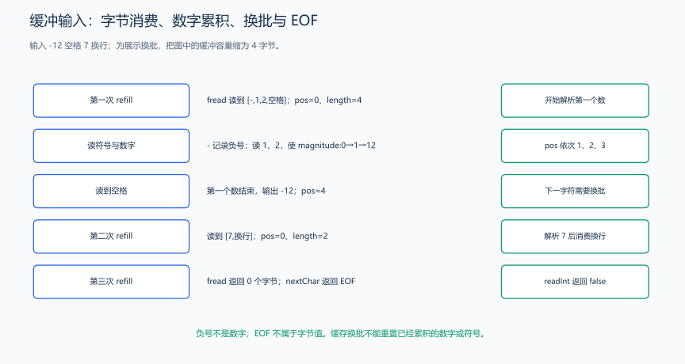

（一） fread 整数输入模板
一次读入大量整数时，可以先把一批字符读进缓冲区，再逐个解析。下面按空格或换行分隔整数，用 long long 保存解析结果；先看字符怎样组成一个数，再看缓冲区怎样补充数据。

数据先读进缓冲区，解析函数再逐字节取用；缓冲耗尽时重新填充，而不是每个字符都发起一次读取。

图把缓冲容量缩小为 4 字节来手算，实际代码使用 64 KiB。输入 -12 7 后换行：先读出负号，再用 value=value*10+digit 得到 1、12；空格结束第一个整数，乘符号后得到 -12。下一次读数时缓冲已耗尽，重新填入 7 与换行，得到 7；再次填充读到 0 字节才返回 EOF。EOF 是读取状态，不能当成数字或普通空白继续处理。
本例用到的输入接口： <cstdio> 提供 fread、stdin、EOF 和 printf。fread(buffer,1,count,stdin) 最多读取 count 个一字节单元，返回实际读到的单元数；stdin 是标准输入来源，EOF 表示读不到下一个字符。<cctype> 的 isspace 判断空白，代码先识别 EOF，再把读到的字节转成 unsigned char 交给它。std::size_t 是无符号的大小类型；字符用 int 接收，可以同时保存字节值和 EOF。printf("%lld\n",value) 输出 long long 整数。本章从读入到输出都使用 C 输入输出接口。
#include <cctype>
#include <cstdio>
#include <limits>
class FastInput {
private:
static constexpr std::size_t bufferSize = 1 << 16;
unsigned char buffer_[bufferSize];
std::size_t position_ = 0;
std::size_t length_ = 0;
int nextChar() {
if (position_ == length_) {
// 当前缓冲区耗尽时，一次读入最多 64 KiB 字节。
length_ = std::fread(buffer_, 1, bufferSize, stdin);
position_ = 0;
if (length_ == 0) {
return EOF;
}
}
return buffer_[position_++];
}
public:
bool read(long long &result) {
int ch = nextChar();
while (ch != EOF && std::isspace(static_cast<unsigned char>(ch))) {
ch = nextChar();
}
if (ch == EOF) {
return false;
}
bool negative = ch == '-';
if (ch == '-' || ch == '+') {
ch = nextChar();
}
if (ch < '0' || ch > '9') {
return false;
}
unsigned long long value = 0;
// 先累计绝对值，才能表示 long long 最小值对应的幅度。
while (ch >= '0' && ch <= '9') {
value = value * 10 + static_cast<unsigned int>(ch - '0');
ch = nextChar();
}
auto limit = static_cast<unsigned long long>(std::numeric_limits<long long>::max());
if (negative && value == limit + 1) {
// 最小负数不能通过“先转为正的 long long 再取负”获得。
result = std::numeric_limits<long long>::min();
} else {
result = static_cast<long long>(value);
if (negative) {
result = -result;
}
}
return true;
}
};调用片段（与上面的类放在同一个源文件中）：
int main() {
FastInput input;
long long value;
while (input.read(value)) {
// 一直读到 EOF；输入由 FastInput 统一接管。
std::printf("%lld\n", value);
}
}read 跳过空白，读取负号和数字，并把结果写入参数；没有下一个整数时返回 false，外层循环随即结束。之后的读取继续从该对象保存的缓冲位置开始。